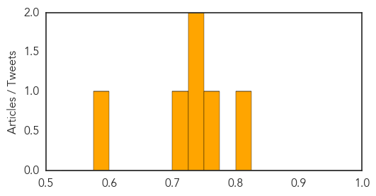

Pertussis
30-Day Web Trend
0 alerts, 0 warnings

30-Day Twitter Trend
0 alerts, 0 warnings

Article Locations

Article Confidences

Top Articles:
-
No articles found for Mar 22, 2014
Top Tweets:
-
No tweets found for Mar 22, 2014
Meningitis
30-Day Web Trend
3 alerts, 0 warnings
30-Day Twitter Trend
1 alerts, 0 warnings
Article Locations
Article Confidences
Top Articles:
- 0.806
- Vaccine U-turn welcomed by North East MP
- 0.758
- Viral meningitis scare at Widener University
- 0.735
- Widener ROTC student has less-serious meningitis
- 0.731
- Lifesaving jab for children in Northern Ireland – but not the Republic (yet)
- 0.723
- Meningitis jab U-turn cheers campaigners
- 0.597
- Pathogens In Cheese
Top Tweets:
-
No tweets found for Mar 22, 2014